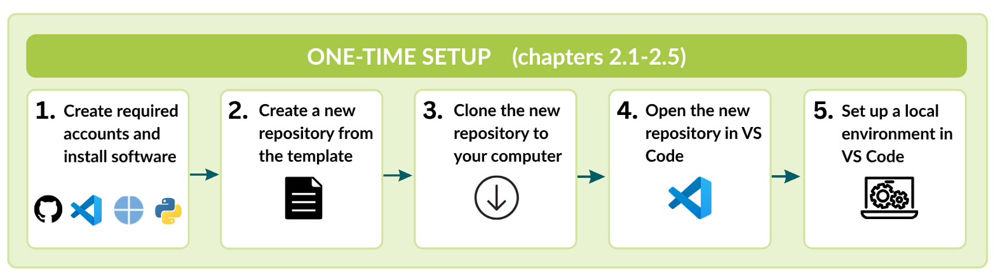
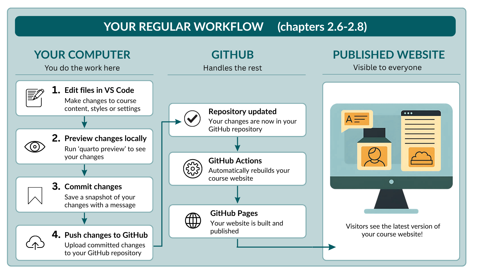

2 Getting started
This chapter explains how to create your own copy of the SciLifeLab Course Page Template, set it up on your computer, and publish your first changes.
By the end of this chapter, you will have your own course repository, be able to edit and preview your course website locally, and know how to publish updates to GitHub.
You do not need prior experience with Git, GitHub, Visual Studio Code, or Quarto. Each section provides step-by-step instructions and explains what you should expect to see before moving on to the next step.
The chapter is divided into two parts:
- One-time setup: the steps you only need to complete once when creating a new course repository.
- Regular workflow: the steps you will repeat whenever you update your course website.
One-time setup
The following steps prepare your computer and create your course repository.

- Create required accounts and install required software
- Create a repository from the template
- Clone the repository to your computer
- Open the repository in Visual Studio Code
- Set up the local environment
Regular workflow
Once the one-time setup is complete, the following workflow is all you need to edit and publish changes to your course website.

At the end of each section, you will find a Quick reference box summarising the most important steps. These boxes provide a quick reminder of the tools, files, and actions involved, making it easy to return to the guide after you have completed the initial setup.
2.1 Create accounts and install software
Before creating your course repository, make sure you have the accounts and software needed to work with the SciLifeLab Course Page Template.
| Software | Why you need it |
|---|---|
| Git | Download the repository to your computer and upload your changes to GitHub. |
| Quarto | Build and preview the course website. |
| Python 3 | Create the virtual environment and run the template scripts. |
| Visual Studio Code | Edit the course files and manage your repository. |
| GitHub account | Store your course repository and publish your course website. |
2.1.1 Install Git
Git is used to download your course repository to your computer and upload your changes back to GitHub.
To install Git, follow the instructions provided in the official Git installation guide:
2.1.2 Install Quarto
Quarto builds and previews the course website.
Download and install the latest version of Quarto from:
2.1.3 Install Python
Python is used to create the virtual environment and run the template scripts.
Download and install the latest stable version of Python from:
2.1.4 Install Visual Studio Code
Visual Studio Code (VS Code) is the editor used throughout this guide to edit and preview the course website.
If you do not already have VS Code installed:
- Visit https://code.visualstudio.com/.
- Download the version for your operating system.
- Follow the installation instructions.
- Open VS Code once to check that it starts correctly.
Screenshot: Visual Studio Code download page.
Throughout this guide, all file editing and Git operations are demonstrated using VS Code. You may use a different editor if you prefer, but the instructions and screenshots assume you are using VS Code.
2.1.5 Create a GitHub account
GitHub is used to store your course repository, collaborate with others, and publish your course website.
If you do not already have a GitHub account:
- Visit https://github.com.
- Click Sign up.
- Follow the instructions to create an account.
If your course repository will be hosted within a GitHub organisation (for example SciLifeLab-Training, SciLifeLabDataCentre, or NBISweden), ask an organisation administrator to add your GitHub account as a member before continuing.
Screenshot: GitHub sign-up page.
Quick reference
Create accounts and install the required software
| To… | Visit |
|---|---|
| Install Git | https://github.com/git-guides/install-git |
| Install Quarto | https://quarto.org/docs/get-started/ |
| Install Python | https://www.python.org/downloads/ |
| Create a GitHub account | https://github.com |
| Download Visual Studio Code | https://code.visualstudio.com/ |
2.2 Create a repository from the template
The first step is to create your own copy of the SciLifeLab Course Webpage Template. This creates a new repository for your course, while leaving the original template unchanged.
2.2.1 Open the template repository
In your web browser, open the SciLifeLab Course Webpage Template.
In the top-right corner of the page, click the green Use this template button and select Create a new repository.
image: fig-alt=“GitHub repository page showing the Use this template button.”
2.2.2 Configure your new repository
GitHub will open the Create a new repository page.
At the top of the page, make sure Include all branches is turned on.
Under Owner, select the GitHub organisation or account where the course repository should be hosted (e.g. SciLifeLabDataCentre, SciLifeLab-Training, NBISweden, Stockholm University, or your personal GitHub account).
If the organisation you need does not appear under Owner, contact an administrator or owner of that organisation to request access.
- Under Repository name, enter a name for your course repository. Use lowercase letters where possible and separate words with hyphens (
-), for exampleintroduction-to-r.
Choose the repository name carefully. The repository name becomes part of the URL of your published course website.
Optionally, add a short description of your course.
Choose the repository visibility. For most courses, select Public so that the course website and training materials can be accessed by others. Select Private only if access to the repository and course materials should be restricted.
Click Create repository.
image: fig-alt=“GitHub form for creating a repository from a template, including the owner, repository name, visibility and Include all branches options.
2.2.3 Check your new repository
GitHub will create the repository and automatically open its main page.
Check the repository name at the top of the page to make sure you are now working in your new course repository, rather than the original SciLifeLab Course Page Template repository.
image: fig-alt=“GitHub page showing a newly created repository based on the course page template.”
2.2.4 Add the website link to your repository
Once your course website has been published, you can add its URL to your GitHub repository. This makes it easy to open the published website directly from the repository home page.
In your GitHub repository, click the Code tab.
On the right-hand side of the page, locate the About section and click the Settings icon.
Screenshot: Repository home page showing the About settings button.
In the Edit repository details dialog:
- Select Use your GitHub Pages website to automatically fill the Website URL.
- Click Save changes.
Screenshot: Edit repository details dialog with the GitHub Pages option selected.
The URL of your published course website will now appear in the About section of your repository. You can use this link to quickly open the latest version of your course website at any time.
2.2.5 Add collaborators
If other people will help develop or maintain the course, you can give them access to the repository. If you do not yet know who will contribute, you can return to this step later.
In your course repository, click Settings.
Under Access in the menu on the left, click Collaborators and teams.
fig-alt=“GitHub repository settings with Collaborators and teams selected under Access.”
- Click Add people or Add teams, depending on who you want to give access to.
- Search for the GitHub user or team.
- Select the appropriate repository role.
- Click Add to confirm.
The options available under Collaborators and teams depend on whether the repository belongs to a personal GitHub account or a GitHub organisation, and on your permissions within that organisation.
Your course repository is now ready to use. In the next section, you will create a local copy of the repository on your computer so that you can begin editing the course website.
Quick reference
Create a repository from the template
| To… | Location | Action |
|---|---|---|
| Create a new course repository | SciLifeLab Course Page Template | Click Use this template → Create a new repository. |
| Copy all template branches | Repository creation page | Turn Include all branches on. |
| Choose where to create the repository | Owner | Select your GitHub organisation or personal account. |
| Name the repository | Repository name | Use lowercase letters and hyphens (-) instead of spaces. |
| Choose the repository visibility | Visibility | Select Public for most course websites. |
| Add collaborators | Settings → Collaborators and teams | Add people or teams and assign the appropriate role. |
| Add the course website link | Code → About → Settings | Select Use your GitHub Pages website to automatically fill the Website URL and click Save changes. |
2.3 Clone the repository to your computer
You now have your course repository on GitHub. The next step is to create a copy of it on your computer so that you can edit, preview, and test the course website locally.
Creating a copy of a GitHub repository on your computer is called cloning.
Any changes you make remain on your computer until you commit and push them back to GitHub. This gives you the opportunity to preview your changes, experiment safely, and fix any mistakes before they become visible to collaborators or visitors to your course website.
2.3.1 Copy the repository URL
On the main page of your course repository, click the green Code button.
Make sure HTTPS is selected, then copy the repository URL.
Screenshot: GitHub Code menu showing the HTTPS repository URL.
2.3.2 Clone the repository
First, decide where you would like to keep your GitHub repositories on your computer. A common choice is to create a folder called GitHub inside your Documents folder.
You will then use a terminal to navigate to this location and clone the repository.
- To navigate to your chosen folder, open a terminal and use the command
cd
For example, to use a GitHub folder inside Documents on macOS, copy and paste the following into the terminal:
cd ~/Documents/GitHubScreenshot: Terminal showing the command above.
You only need to choose this location once. When you clone the repository, Git will automatically create a new folder with the repository name inside this location.
- To then clone your new repository into this folder, copy and paste the following into your terminal:
git clone REPOSITORY-URLReplace REPOSITORY-URL with the HTTPS URL you copied from GitHub.
For example:
git clone https://github.com/ORGANISATION/my-course.gitScreenshot: Terminal showing the completed git clone command.
Git will download the repository and create a new folder containing all of the files needed for your course website.
You now have a local copy of your course repository. In the next section, you will open it in Visual Studio Code and prepare it for editing.
Quick reference
Clone the repository to your computer
| To… | Tool | Action |
|---|---|---|
| Copy the repository URL | GitHub | Click Code, select HTTPS, and copy the repository URL. |
| Choose where to store the repository | Terminal | Navigate to the folder where you want to keep your GitHub repositories. |
| Clone the repository | Terminal | Run git clone REPOSITORY-URL. |
| Verify the repository was cloned | File Explorer/Finder | Check that a new folder with your repository name has been created. |
2.4 Open the repository in Visual Studio Code
Throughout this guide, you will use Visual Studio Code (VS Code) to edit your course website, preview your changes, and manage the repository.
To open your new repository in VS Code:
- Open Visual Studio Code.
- From the menu bar, select: File → Open Folder…
- Navigate to the repository you just cloned, select the repository folder, and click Open.
Screenshot: VS Code showing the Open Folder dialog with the cloned repository selected.
4.The files and folders in your repository should now appear in the Explorer panel on the left-hand side of the window.
Throughout this guide, you will edit files by selecting them from the Explorer.
Screenshot: VS Code showing the Explorer panel with the repository opened.
- When you open the repository for the first time, VS Code may display a notification recommending extensions for this workspace (if these extensions are not yet installed). If so, click Install to install the recommended extensions, these provide support for working with the template.
Screenshot: VS Code showing the “Install Recommended Extensions” notification.
You are now ready to set up the local environment needed to edit and preview your course website.
Quick reference
Open the repository in Visual Studio Code
| To… | Tool | Action |
|---|---|---|
| Open the repository | Visual Studio Code | Select File → Open Folder… and choose your repository folder. |
| Install the recommended extensions | Visual Studio Code | Click Install if prompted. |
| Browse the repository files | Explorer panel | Use the Explorer to open and edit files throughout this guide. |
2.5 Set up the local environment
Before you can preview and edit your course website in VS Code, you need to prepare the local environment on your computer. For this, you can simply copy and paste the commands below into the terminal exactly as shown.
2.5.1 Open a terminal
To open a terminal in VS Code, select Terminal → New Terminal.
A terminal should open at the bottom of the VS Code window.
Screenshot: VS Code showing Terminal → New Terminal.
2.5.2 Check that Git, Quarto, and Python are installed
Before continuing, check that Git, Quarto, and Python have been installed correctly.
Copy and paste the following three commands into the terminaL.
git --version
quarto --version
python3 --versionIf each command prints a version number, the software has been installed correctly and you are ready to continue.
For example:
git version 2.50.1
Quarto 1.8.24
Python 3.13.5If one of the commands reports command not found, the corresponding software is not installed or cannot be found by your computer.
Return to Create accounts and install the required software, install the missing software, and then repeat the commands above before continuing.
2.5.3 Create a virtual environment
Copy and paste the following command into the terminal, then press Enter.
python3 -m venv .venv2.5.4 Activate the virtual environment
Next, copy and paste the following command into the terminal, and press Enter:
source .venv/bin/activateIf the command was successful, you should see (.venv) at the beginning of the terminal prompt.
For example:
(.venv) username@computer my-course %Screenshot: Terminal showing (.venv) at the beginning of the prompt.
2.5.5 Install the required software
Finally, copy and paste the following commands into the terminal, and press Enter:
python -m pip install --upgrade pip
python -m pip install -r requirements-dev.txtThis may take a minute or two. Once the installation is complete, your local environment is ready and you can preview your course website.
You only need to create the virtual environment and install the required software once for each course repository.
The next time you work on the repository, simply open a terminal in VS Code and reactivate the virtual environment by running:
source .venv/bin/activateYou should again see (.venv) at the beginning of the terminal prompt.
Quick reference
Set up the local environment
| To… | Tool | Action |
|---|---|---|
| Open a terminal | Visual Studio Code | Select Terminal → New Terminal. |
| Create the virtual environment | Terminal | Run python3 -m venv .venv. |
| Activate the virtual environment | Terminal | Run source .venv/bin/activate. |
| Install the required software | Terminal | Run python -m pip install --upgrade pip followed by python -m pip install -r requirements-dev.txt. |
| Check that the environment is active | Terminal | Verify that (.venv) appears at the beginning of the terminal prompt. |
2.6 Preview the course website
You are now ready to preview your course website on your computer.
The SciLifeLab Course Page Template uses Quarto to build the website. Before publishing any changes, you can preview the website locally in your web browser to check that everything looks as expected.
The preview is only visible on your own computer. This allows you to safely experiment, edit, and test your course website before your changes become visible to collaborators or visitors.
2.6.1 Start the preview - terminal
To start the preview, open a terminal in VS Code. In the terminal, run:
quarto previewQuarto will build the website and, after a few seconds, display an address similar to:
http://localhost:4268/In most cases, this page will open automatically in your default web browser. If it does not, copy the address from the terminal and open it manually in your browser.
fig-alt=“Course landing page displayed locally in a web browser using Quarto preview.”
2.6.3 Preview your changes
The website you are viewing is a local preview. It is only available on your computer and is not visible to anyone else.
As you edit and save files in VS Code, Quarto automatically rebuilds the website and refreshes the preview in your browser. This allows you to see your changes automatically without restarting the preview.
2.6.4 Stop the preview
While the preview is running, the terminal is being used by Quarto. If you need to run other commands without stopping the preview, open a second terminal in VS Code.
When you are finished, return to the terminal where quarto preview is running and press Ctrl+C to stop the preview.
You can start the preview at any time by either:
- running
quarto preview- clicking the Open Preview button in VS Code.
Whenever you return to work on your course, remember to first activate the virtual environment by running:
source .venv/bin/activateQuick reference
Preview the course website
| To… | Tool | Action |
|---|---|---|
| Start the preview | Terminal | Run quarto preview. |
| Start the preview | Visual Studio Code | Click the Open Preview button. |
| View the website in your browser | Visual Studio Code | Click the Open in Browser button from the preview window. |
| Preview your changes | Visual Studio Code | Save the file. The preview refreshes automatically. |
| Run additional commands | Visual Studio Code | Open a second terminal. |
| Stop the preview | Terminal | Press Ctrl+C. |
2.7 Commit and push your changes
So far, any changes you make exist only on your own computer.
To make these changes available to collaborators and publish them on your course website, you need to commit and push them to GitHub.
In this section, you will make a small change to the landing page and publish it to your repository.
2.7.1 Make a small change
Open
_sections/hero.qmd.Locate the course title:
:::{.hero__copy}
:::{.hero__title}
Course title
:::- Replace Course title with something recognisable, for example:
:::{.hero__copy}
:::{.hero__title}
This is my first course website
:::- Save the file by pressing Command+S (macOS) or Ctrl+S (Windows/Linux).
If quarto preview is running, the preview should refresh automatically and display the updated title.
Screenshot: Updated course title in the preview.
2.7.2 Open Source Control
In Visual Studio Code, click the Source Control icon in the Activity Bar on the left-hand side.
You should now see the files that have changed since you cloned the repository. In this example, _sections/hero.qmd should be listed under Changes.
Screenshot: Source Control showing the modified file.
2.7.3 Stage the changes
Click the + button next to the file under Changes. When you hover over the + button, the tooltip will say Stage Changes.
Staging tells Git which changes you want to include in your next commit. Only staged changes will be committed and later published to your course website.
If you have made changes that you do not want to keep, you can either leave them unstaged or discard them using the Discard Changes button.
Screenshot: Stage Changes button.
2.7.4 Commit the changes
At the top of the Source Control panel, enter a short description of the changes you made in the Message box.
For example:
Update course titleThen click the blue Commit button.
Screenshot: Commit message box and Commit button.
2.7.5 Push the changes to GitHub
After committing, click the blue Sync Changes button.
Visual Studio Code will upload (or push) your committed changes to GitHub.
Screenshot: Sync Changes button.
Once the upload is complete:
- your collaborators can see the changes in the GitHub repository;
- GitHub automatically republishes your course website with the new changes.
2.8 View the published website
After you push your changes to GitHub, the course website is updated automatically. You do not need to publish the website yourself.
It usually takes less than a minute for GitHub to rebuild and republish the landing page.
2.8.1 Check that the deployment was successful
Open your course repository on GitHub.
Click the Actions tab.
You should see a workflow called pages build and deployment. While the website is being rebuilt, the workflow will show a yellow indicator.
Once the deployment has finished successfully, a green checkmark will appear next to the workflow.
Screenshot: GitHub Actions page showing a successful deploy-landing workflow.
2.8.2 View the published website
Once the deploy-landing workflow has finished successfully, you can view the updated course website.
In your GitHub repository, click the Code tab.
In the About section on the right-hand side, click the website URL you added earlier.
Screenshot: Repository home page showing the website URL in the About section.
The published course website will open in your web browser.
Refresh the page if necessary. The change you made to the course title should now be visible.
If you do not see your changes immediately, wait a minute and refresh the page. GitHub Pages can sometimes take a short time to update after the deployment has finished.
2.9 Next steps
Congratulations! You now have your own copy of the SciLifeLab Course Page Template running locally and published through GitHub Pages. Continue with:
- Landing page to customise the landing page.
- Course instances to create, manage and customize course instances.
- FAIRification to prepare your training materials for publication and reuse.